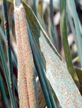
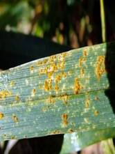

WHEAT :: MAJOR DISEASES :: BROWN OR LEAF RUST
Brown or leaf rust - Puccinia triticina (P. recondita)
Symptom
The most common site for symptoms is on leaf blades, however, sheaths, glumes and awns may occasionally become infected and exhibit symptoms. Uredia are seen as small, circular orange blisters or pustules on the upper surface of leaves.
|  |  |
Symptoms |
|
Orange spores are easily dislodged and may cover clothing, hands or implements. When the infection is severe leaves dry out and die. Since inoculum is blown into a given area, symptoms are often seen on upper leaves first. As plants mature, the orange urediospores are replaced by black teliospores. Pustules containing these spores are black and shiny since the epidermis does not rupture. Yield loss often occurs as a result of infection by Puccinia recondita f. sp. tritici. Heavy infection which extends to the flag leaf results in a shorter period of grain fill and small kernels.